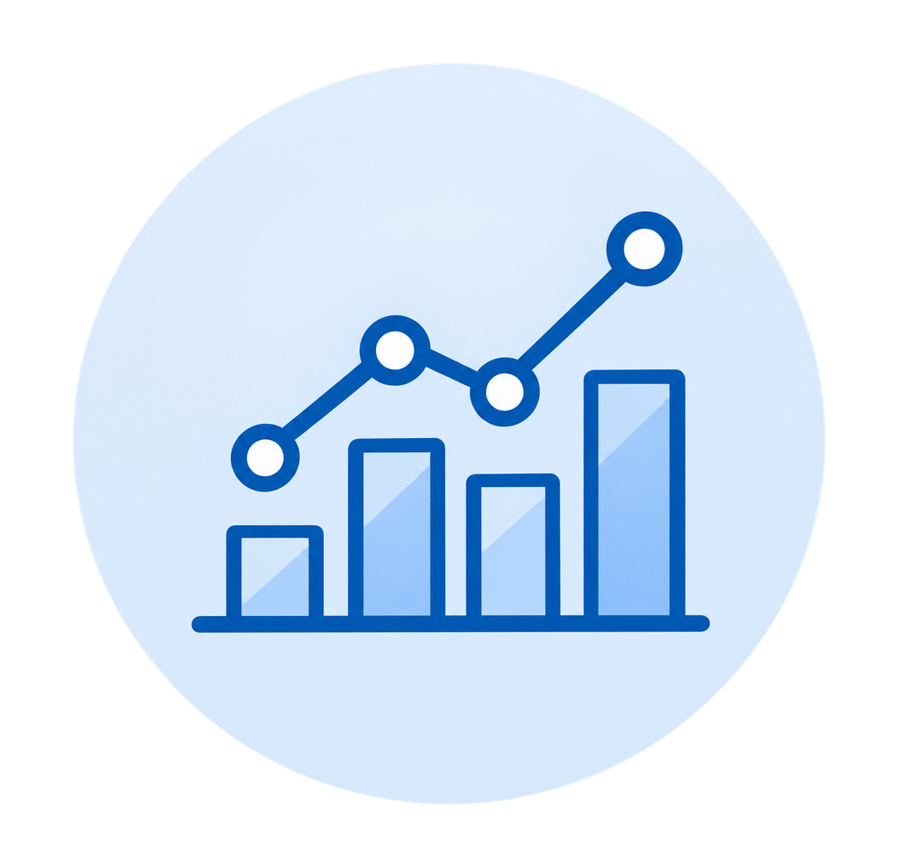
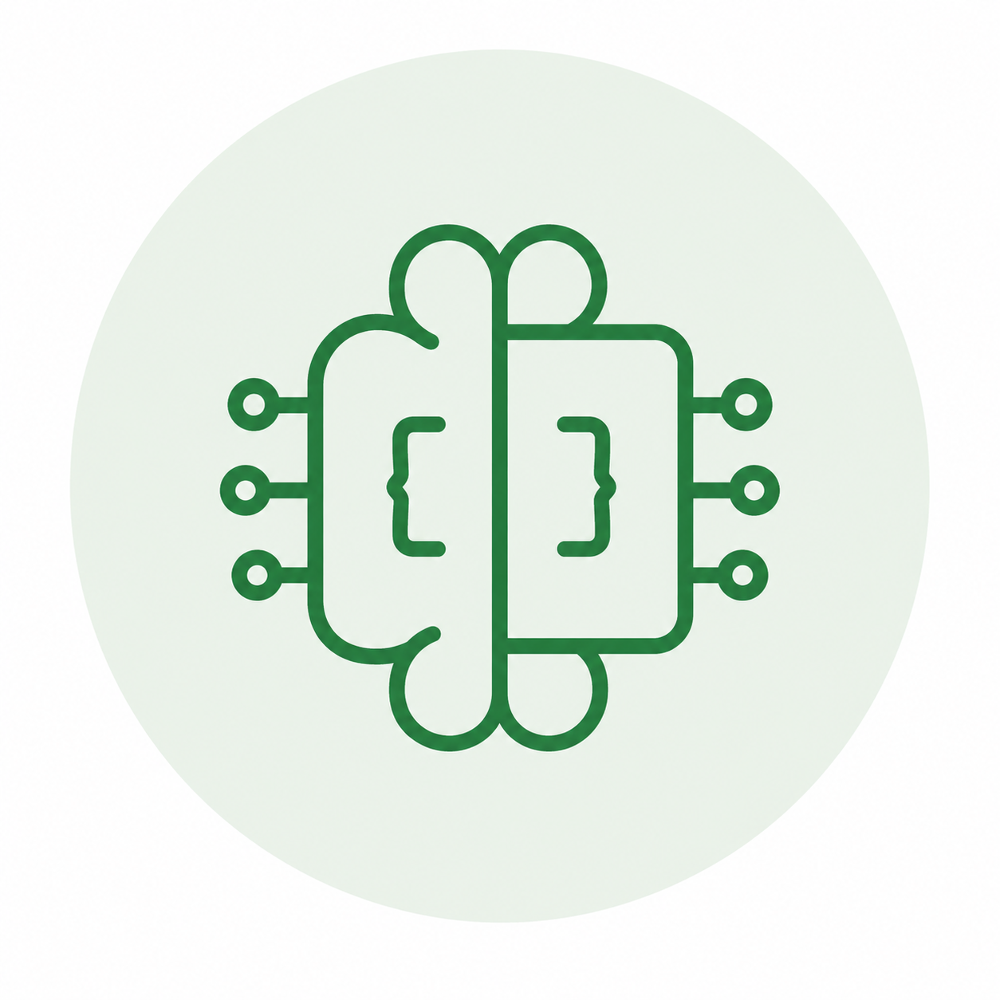

Hello, I'm Jane
I have 10+ years of experience across finance, analytics, and data engineering at leading financial services firms, including Millennium Management, Goldman Sachs, and Bank of America.
I started my career in Finance & Accounting and eventually found my way into analytics because I love digging into the details, testing assumptions, finding patterns, and turning complex data into insights that help drive better decisions.
I'm originally from Ukraine and have been living in the US since 2008. Outside of work, I enjoy traveling, playing racquet sports, and learning new things.

Interactive dashboard analyzing U.S. labor market trends using Census and Bureau of Labor Statistics data.

AI-powered financial analyst that analyzes real-time stock data and generates an investment brief with price history and a downloadable PDF.
Interactive dashboard tracking consumer spending patterns and trends.